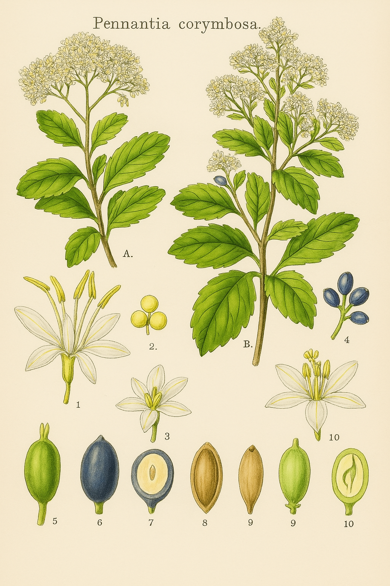

Pennantiaceae
Kaikōmako Family (informal, NZ)
Pennantiaceae is a small, monogeneric family of flowering plants in the order Apiales, containing only the genus Pennantia with four species of evergreen or deciduous shrubs and trees. The family has a notably disjunct distribution across the Southwest Pacific, with species found in eastern Australia, Norfolk Island, and New Zealand. They are often characterized by alternate, simple leaves and small flowers borne in panicles or cymes, producing small drupe fruits.
Overview
The Pennantiaceae family consists solely of the genus Pennantia, named after the Welsh naturalist Thomas Pennant. Its four species are geographically isolated from each other, suggesting an older origin and vicariance or long-distance dispersal events. These plants range from shrubs to medium-sized trees found in various forest types within their respective ranges.
One of the most striking features is the pronounced heterophylly exhibited by the New Zealand species, Pennantia corymbosa (Kaikōmako). Its juvenile form is a densely tangled shrub with small, lobed leaves, contrasting sharply with the adult tree form which has larger, entire leaves and a more open structure. Flowers in the family are generally small, often unisexual (with plants being dioecious or polygamo-dioecious), and arranged in branched inflorescences. The fruit is a small drupe, typically black or purple.
Phylogenetically, Pennantiaceae is placed within the order Apiales, which also includes well-known families like Apiaceae (carrot family) and Araliaceae (ivy/ginseng family). It is considered one of the earlier diverging lineages within this order.
Quick Facts
- Scientific Name: Pennantiaceae J.Agardh
- Common Name: Kaikōmako Family (NZ, informal); no widely used general name.
- Number of Genera: 1 (Pennantia)
- Number of Species: 4
- Distribution: Disjunct: Eastern Australia (2 spp.), Norfolk Island (1 sp.), New Zealand (1 sp.).
- Evolutionary Group: Eudicots - Asterids - Campanulids - Apiales
Key Characteristics
Growth Form and Habit
Evergreen or deciduous (P. corymbosa) shrubs or small to medium-sized trees. The New Zealand species, P. corymbosa, exhibits strong heterophylly, with distinct juvenile (divaricating shrub) and adult (tree) forms.
Leaves
Leaves are arranged alternately along the stem. They are simple, often leathery (coriaceous). Leaf margins vary: entire, toothed (serrate/dentate), or lobed (especially in juvenile P. corymbosa). Stipules are absent or minute and falling early.
Inflorescence
Flowers are borne in terminal or axillary, often many-flowered, branched inflorescences, typically panicles or corymbose cymes.
Flowers
Flowers are small, generally whitish or greenish, actinomorphic (radially symmetrical), and usually unisexual (plants are dioecious or polygamo-dioecious, meaning some plants have bisexual flowers alongside unisexual ones). Flowers are typically 5-merous.
- Calyx: Small, with 5 minute teeth or lobes, fused at the base, persistent in fruit.
- Petals: 5, free, small, often oblong or strap-shaped, sometimes reflexed (bent backwards) at maturity.
- Androecium (Male/Bisexual Flowers): Stamens 5, alternating with the petals, inserted near the base of the ovary or on a small disc. Filaments are distinct. Anthers typically open via longitudinal slits. Female flowers possess staminodes (sterile stamens).
- Gynoecium (Female/Bisexual Flowers): Ovary is generally considered superior (though sometimes described as slightly sunken in a hypanthium, appearing semi-inferior). It is composed of seemingly 2-3 fused carpels but is functionally unilocular (single chamber) with only one carpel/locule being fertile. A single pendulous ovule is attached near the apex of the locule. The style is single and short, with a capitate (head-like) or slightly lobed stigma. Male flowers possess a rudimentary pistil (pistillode).
Fruits and Seeds
The fruit is a small, ovoid or globose, fleshy drupe, typically black or dark purple when ripe. It contains a single stone (pyrene) enclosing one seed. The seed contains endosperm.
Chemical Characteristics
Limited information available. As members of Apiales, the presence of iridoid compounds is likely, but specific chemical profiles are not widely documented.
Field Identification
Identifying Pennantiaceae requires recognizing its specific characteristics within its limited geographic range:
Primary Identification Features
- Geographic Location: Restricted to Eastern Australia, Norfolk Island, or New Zealand.
- Habit: Shrub or tree. Check for divaricating juvenile form if in New Zealand (P. corymbosa).
- Leaves: Alternate, simple, margins entire, toothed, or lobed (juvenile NZ form). Stipules absent.
- Flowers: Small, 5-merous, usually unisexual (dioecious/polygamous), borne in panicles or cymes. Petals 5, free. Stamens 5.
- Ovary: Superior, functionally 1-locular with 1 ovule.
- Fruit: Small, black or dark purple fleshy drupe.
Secondary Identification Features
- Heterophylly (NZ): Striking difference between tangled juvenile shrub and adult tree form in P. corymbosa.
- Inflorescence Type: Branched panicles or corymbs.
- Habitat: Forests, forest margins, scrubland within their ranges.
Seasonal Identification Tips
- Flowering Period: Typically spring or summer, depending on the species and location. Flowers are small but occur in noticeable clusters.
- Fruiting Period: Drupes mature later, often conspicuous due to their dark color against the foliage.
- Vegetative State: Alternate simple leaves are common; the specific leaf shape, margin, and presence/absence of heterophylly (in NZ) are key vegetative clues within the known distribution.
Common Confusion Points
Distinguishing features depend on the region:
- In New Zealand: The juvenile form of P. corymbosa might be confused with other divaricating shrubs (e.g., some Coprosma - Rubiaceae, which have opposite leaves and stipules; some Pittosporaceae). The adult tree needs comparison with other trees having alternate simple leaves; the combination with small flowers in panicles and black drupes is distinctive.
- In Australia: Needs comparison with other rainforest trees/shrubs having alternate simple leaves (e.g., some Pittosporaceae, Escalloniaceae, Aquifoliaceae). Checking floral details (5 free petals, 5 stamens, superior 1-locular ovary) and the drupe fruit is necessary.
- General: The combination of alternate simple leaves, lack of stipules, small 5-merous unisexual/polygamous flowers, superior 1-locular ovary, and drupe fruit is characteristic for the family within its range.
Field Guide Quick Reference (E Aus/Norfolk Is/NZ)
Look For:
- Shrub or tree
- Leaves: Alternate, simple, no stipules
- Heterophylly (in NZ species)
- Flowers: Small, 5-merous, often unisexual, in panicles/cymes
- Petals: 5, free
- Stamens: 5
- Ovary: Superior, 1-locular
- Fruit: Small black/purple drupe
Key Distinctions:
- Single genus: Pennantia
- Restricted, disjunct distribution
- Combination of alternate leaves, small 5-merous flowers, and drupe fruit
- Heterophylly in NZ species
- Dioecious/polygamous breeding system
Notable Examples (The Four Species)
The family contains only one genus, Pennantia, with four geographically distinct species:

Pennantia corymbosa
Kaikōmako
Endemic to New Zealand. Famous for its distinct juvenile form – a dense, tangled, small-leaved divaricating shrub – which eventually develops into an adult tree up to 10m tall with larger, less lobed leaves. Small white flowers are borne in corymbose panicles, followed by black drupes favoured by birds.

Pennantia cunninghamii
Brown Beech / Duck's Foot
A rainforest tree found in eastern Australia (Queensland and New South Wales). It grows up to 30m tall with simple, alternate leaves that are toothed or entire. Produces panicles of small, fragrant, white flowers followed by black drupes.

Pennantia endlicheri
(Norfolk Island Pennantia)
Endemic to Norfolk Island (between Australia, New Zealand, and New Caledonia). It is a small tree with alternate, simple leaves and produces small flowers and black drupes similar to other members of the genus. It is considered endangered.

Pennantia sp. 'Mt Lewis'
(Mount Lewis Pennantia)
An undescribed species found only in a restricted area of upland rainforest near Mount Lewis in northeastern Queensland, Australia. It is distinguished from P. cunninghamii by details of its leaf shape, inflorescence, and potentially other characters. It represents the second Australian species.
Phylogeny and Classification
Pennantiaceae belongs to the order Apiales, which is part of the large campanulid clade within the asterids. This order is best known for including the large families Apiaceae (carrot family) and Araliaceae (ivy/ginseng family).
Molecular phylogenetic studies place Pennantiaceae as one of the earliest diverging lineages within the Apiales. Its exact sister group relationship is sometimes debated, but it consistently falls outside the core Apiales clade that includes Apiaceae, Araliaceae, Pittosporaceae, Myodocarpaceae, and Griseliniaceae. It may be sister to all other Apiales, or part of a small clade with families like Torricelliaceae. This basal position reflects its retention of some potentially ancestral features for the order, such as the drupaceous fruit.
Position in Plant Phylogeny (APG IV)
- Kingdom: Plantae
- Clade: Angiosperms (Flowering plants)
- Clade: Eudicots
- Clade: Asterids
- Clade: Campanulids
- Order: Apiales
- Family: Pennantiaceae
Evolutionary Significance
Pennantiaceae, despite its small size, offers insights into:
- Basal Apiales Evolution: Its position as an early-diverging lineage helps understand the ancestral traits and early diversification patterns within the Apiales order.
- Biogeography: The highly disjunct distribution across remnants of Gondwana (Australia, NZ) and islands like Norfolk Island points to ancient origins and complex histories involving vicariance and potential dispersal.
- Heterophylly: The dramatic difference between juvenile and adult forms in P. corymbosa is a striking example of developmental plasticity, possibly related to past browsing pressure or environmental adaptation in New Zealand.
- Floral Evolution: The prevalence of unisexual/polygamous flowers and the simple floral structure might reflect trends in the early evolution of Apiales.